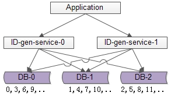
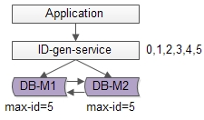
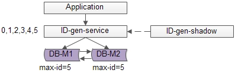

分布式ID生成方法
架构 细聊分布式ID生成方法
需求缘起
几乎所有的业务系统，都有生成一个记录标识的需求，例如：
- 消息标识：message-id
- 订单标识：order-id
- 帖子标识：tiezi-id
这个记录标识往往就是数据库中的唯一主键，数据库上会建立聚集索引（cluster index），即在物理存储上以这个字段排序。
这个记录标识上的查询，往往又有分页或者排序的业务需求，例如：
- 拉取最新的一页消息：select message-id/ order by time/ limit 100
- 拉取最新的一页订单：select order-id/ order by time/ limit 100
- 拉取最新的一页帖子：select tiezi-id/ order by time/ limit 100
所以往往要有一个time字段，并且在time字段上建立普通索引（non-cluster index）。
我们都知道普通索引存储的是实际记录的指针，其访问效率会比聚集索引慢，如果记录标识在生成时能够基本按照时间有序，则可以省去这个time字段的索引查询：
select message-id/ (order by message-id)/limit 100
再次强调，能这么做的前提是，message-id的生成基本是趋势时间递增的。
这就引出了记录标识生成（也就是上文提到的三个XXX-id）的两大核心需求：
- 全局唯一
- 趋势有序
这也是本文要讨论的核心问题：如何高效生成趋势有序的全局唯一ID。
常见方案
使用数据库的 auto_increment 来生成全局唯一递增ID
优点：
- 简单，使用数据库已有的功能
- 能够保证唯一性
- 能够保证递增性
- 步长固定
缺点：
- 可用性难以保证：数据库常见架构是一主多从+读写分离，生成自增ID是写请求，主库挂了就玩不转了
- 扩展性差，性能有上限：因为写入是单点，数据库主库的写性能决定ID的生成性能上限，并且难以扩展
改进方法：
- 增加主库，避免写入单点
- 数据水平切分，保证各主库生成的ID不重复

如上图所述，由1个写库变成3个写库，每个写库设置不同的auto_increment初始值，以及相同的增长步长，以保证每个数据库生成的ID是不同的（上图中库0生成0,3,6,9…，库1生成1,4,7,10，库2生成2,5,8,11…）
改进后的架构保证了可用性，
但缺点是：
- 丧失了ID生成的“绝对递增性”：先访问库0生成0,3，再访问库1生成1，可能导致在非常短的时间内，ID生成不是绝对递增的（这个问题不大，我们的目标是趋势递增，不是绝对递增）
- 数据库的写压力依然很大，每次生成ID都要访问数据库
为了解决上述两个问题，引出了第二个常见的方案
单点批量ID生成服务
分布式系统之所以难，很重要的原因之一是“没有一个全局时钟，难以保证绝对的时序”，要想保证绝对的时序，还是只能使用单点服务，用本地时钟保证“绝对时序”。数据库写压力大，是因为每次生成ID都访问了数据库，可以使用批量生成的方式降低数据库写压力。

如上图所述，数据库使用双master保证可用性，数据库中只存储当前ID的最大值，例如0。ID生成服务假设每次批量拉取6个ID，服务访问数据库，将当前ID的最大值修改为5，这样应用访问ID生成服务索要ID，ID生成服务不需要每次访问数据库，就能依次派发0,1,2,3,4,5这些ID了，当ID发完后，再将ID的最大值修改为11，就能再次派发6,7,8,9,10,11这些ID了，于是数据库的压力就降低到原来的1/6了.
优点：
- 保证了ID生成的绝对递增有序
- 大大的降低了数据库的压力，ID生成可以做到每秒生成几万几十万个
缺点：
- 服务仍然是单点
- 如果服务挂了，服务重启起来之后，继续生成ID可能会不连续，中间出现空洞（服务内存是保存着0,1,2,3,4,5，数据库中max-id是5，分配到3时，服务重启了，下次会从6开始分配，4和5就成了空洞，不过这个问题也不大）
- 虽然每秒可以生成几万几十万个ID，但毕竟还是有性能上限，无法进行水平扩展
改进方法：
单点服务的常用高可用优化方案是“备用服务”，也叫“影子服务”，所以我们能用以下方法优化上述缺点

如上图，对外提供的服务是主服务，有一个影子服务时刻处于备用状态，当主服务挂了的时候影子服务顶上。这个切换的过程对调用方是透明的，可以自动完成，常用的技术是vip+keepalived，具体就不在这里展开
uuid
上述方案来生成ID，虽然性能大增，但由于是单点系统，总还是存在性能上限的。同时，上述两种方案，不管是数据库还是服务来生成ID，业务方Application都需要进行一次远程调用，比较耗时。有没有一种本地生成ID的方法，即高性能，又时延低呢？
uuid是一种常见的方案：string ID =GenUUID();
优点：
- 本地生成ID，不需要进行远程调用，时延低
- 扩展性好，基本可以认为没有性能上限
缺点：
- 无法保证趋势递增
- uuid过长，往往用字符串表示，作为主键建立索引查询效率低，常见优化方案为“转化为两个uint64整数存储”或者“折半存储”（折半后不能保证唯一性）
取当前毫秒数
uuid是一个本地算法，生成性能高，但无法保证趋势递增，且作为字符串ID检索效率低，有没有一种能保证递增的本地算法呢？
取当前毫秒数是一种常见方案：uint64 ID = GenTimeMS();
优点：
- 本地生成ID，不需要进行远程调用，时延低
- 生成的ID趋势递增
- 生成的ID是整数，建立索引后查询效率高
缺点：
- 如果并发量超过1000，会生成重复的ID
我去，这个缺点要了命了，不能保证ID的唯一性。当然，使用微秒可以降低冲突概率，但每秒最多只能生成1000000个ID，再多的话就一定会冲突了，所以使用微秒并不从根本上解决问题。
类snowflake算法
snowflake是twitter开源的分布式ID生成算法，其核心思想是：一个long型的ID，使用其中 41bit 作为毫秒数，10bit 作为机器编号，12bit 作为毫秒内序列号。这个算法单机每秒内理论上最多可以生成1000*(2^12)，也就是 400W 的ID，完全能满足业务的需求。
借鉴snowflake的思想，结合各公司的业务逻辑和并发量，可以实现自己的分布式ID生成算法。
举例，假设某公司ID生成器服务的需求如下：
- 单机高峰并发量小于1W，预计未来5年单机高峰并发量小于10W
- 有2个机房，预计未来5年机房数量小于4个
- 每个机房机器数小于100台
- 目前有5个业务线有ID生成需求，预计未来业务线数量小于10个
- …
分析过程如下：
- 高位取从2016年1月1日到现在的毫秒数（假设系统ID生成器服务在这个时间之后上线），假设系统至少运行10年，那至少需要10年365天24小时3600秒1000毫秒=320*10^9，差不多预留39bit给毫秒数
- 每秒的单机高峰并发量小于10W，即平均每毫秒的单机高峰并发量小于100，差不多预留7bit给每毫秒内序列号
- 5年内机房数小于4个，预留2bit给机房标识
- 每个机房小于100台机器，预留7bit给每个机房内的服务器标识
- 业务线小于10个，预留4bit给业务线标识
这样设计的64bit标识，可以保证：
- 每个业务线、每个机房、每个机器生成的ID都是不同的
- 同一个机器，每个毫秒内生成的ID都是不同的
- 同一个机器，同一个毫秒内，以序列号区区分保证生成的ID是不同的
- 将毫秒数放在最高位，保证生成的ID是趋势递增的
缺点：
由于“没有一个全局时钟”，每台服务器分配的ID是绝对递增的，但从全局看，生成的ID只是趋势递增的（有些服务器的时间早，有些服务器的时间晚）
最后一个容易忽略的问题：
生成的ID，例如message-id/ order-id/ tiezi-id，在数据量大时往往需要分库分表，这些ID经常作为取模分库分表的依据，为了分库分表后数据均匀，ID生成往往有“取模随机性”的需求，所以我们通常把每秒内的序列号放在ID的最末位，保证生成的ID是随机的。
又如果，我们在跨毫秒时，序列号总是归0，会使得序列号为0的ID比较多，导致生成的ID取模后不均匀。解决方法是，序列号不是每次都归0，而是归一个0到9的随机数，这个地方
ref:
架构 细聊分布式ID生成方法